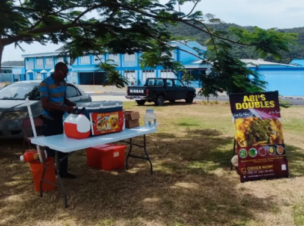
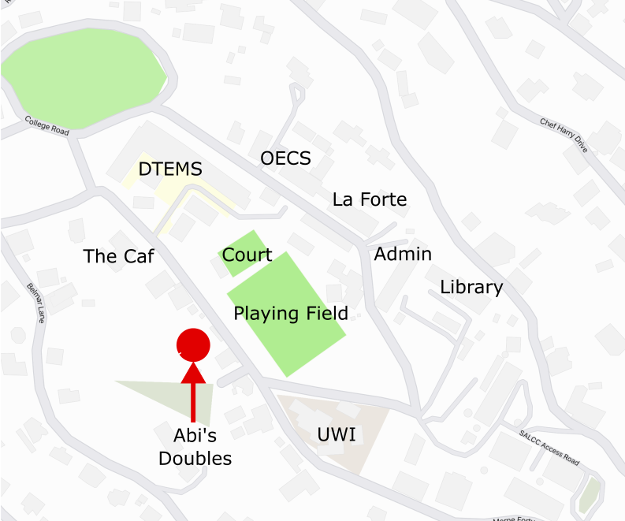
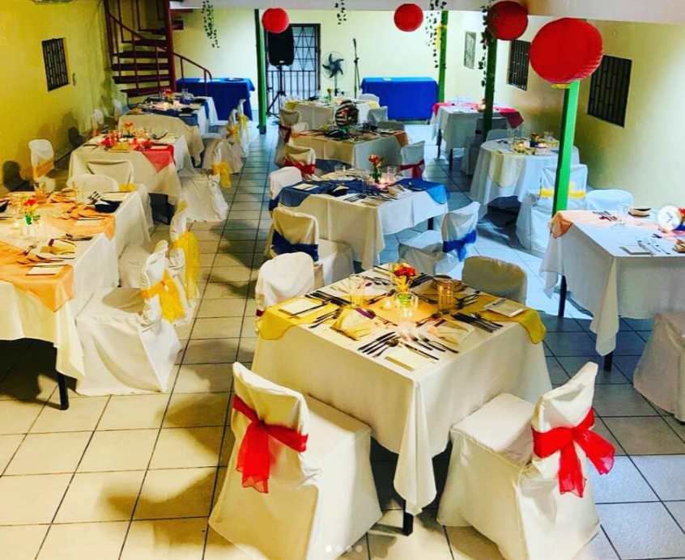
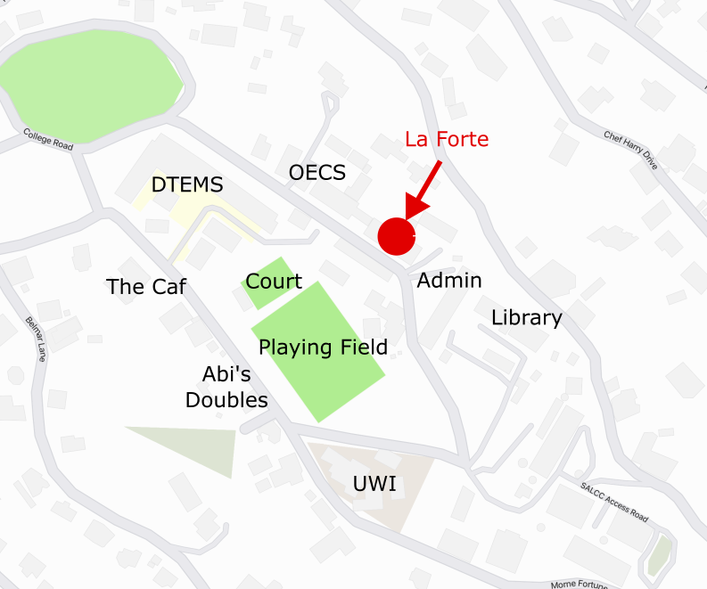
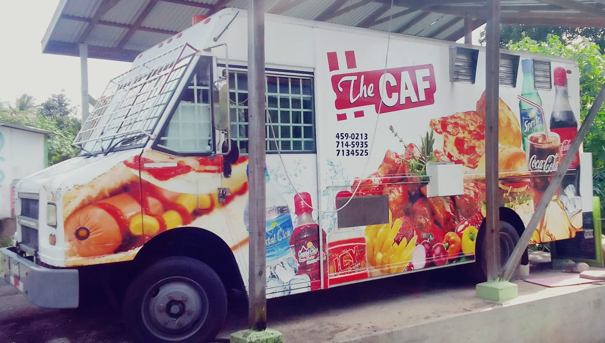
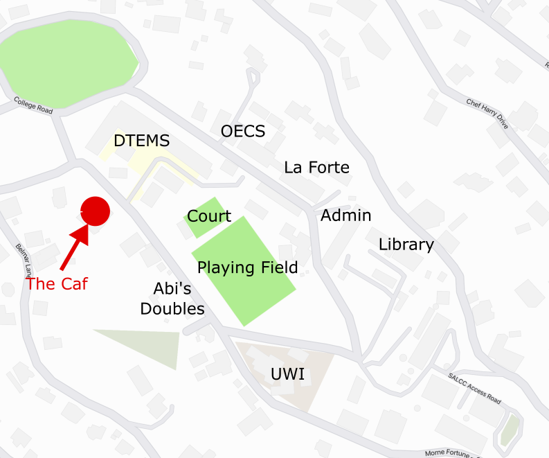

Food Outlets
Abi's Doubles
Abi's Doubles is a beloved food stand bringing the authentic flavors of Trinidad straight to
your plate. Specializing in doubles, rotis and other Indo-Carib delicacies, this authentic business is the
heartwarming creation of a devoted
Trinidadian family. Their Indian based recipes combine bold spices, fresh
ingredients, and a touch of love in every bite.
Known for its warm, friendly service, Abi’s Doubles offers customers a convenient and delicious taste of
Trinidadian street food. Whether you’re craving the soft, savory goodness of a perfectly spiced sweet curry
double or the hearty comfort of a stuffed beef roti, Abi’s is the place to be. It isn’t just about the
food, it’s about enjoying a meal made with family pride and sharing a moment of home away from home.

It is located opposite the playing field on Cacoa Road.

Le Forte
Located on the Morne Fortune campus of the Sir Arthur Lewis Community College, Le Forte is a student-run
restaurant operated by the college’s culinary arts program. This unique dining experience allows students
to apply their skills in a real-world setting, serving dishes that blend the cultural heritage of St. Lucia with
global culinary influences.
Using fresh, locally sourced ingredients, the menu showcases the island’s flavors while highlighting the
creativity and talent of the students. Guests can enjoy a welcoming atmosphere and stunning views of Castries and
the vast ocean, all while supporting the next generation of chefs. Le Forte combines education, culture, and
delicious food into a one-of-a-kind dining experience.

It is located between the Organisation of Eastern Caribbean States building and the SALCC administratuion
building on College Road.

The Caf
Nestled right outside their home, The Caf is more than just a fast-food truck—it’s a heartfelt
extension of the owners' warm hospitality and dedication to serving the campus community. Family-run and operated,
the truck and adjacent shanty with benches offers a cozy, welcoming environment.
With a focus on accommodating every customer, The Caf is known for its exceptional service and delicious
menu that caters to all cravings, from juicy burgers to crispy fries and flavorful local specials. Whether you’re
grabbing a quick bite between classes or looking for a relaxed meal with friends, this food truck combines
convenience, comfort, and quality to create a dining experience that feels like home.

It is located opposite the playing field on Cacoa Road.
